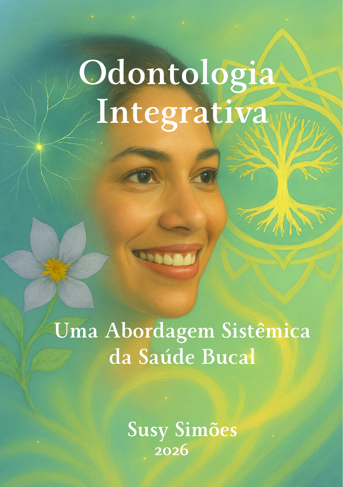

Tratamentos odontológicos que unem técnica, tecnologia e uma visão integrativa do seu bem-estar. Cada paciente é único e recebe um plano personalizado.

A Dra. Susy Simões acredita que a saúde bucal está diretamente conectada ao bem-estar do corpo inteiro. Sua abordagem integrativa combina tratamentos convencionais com uma visão holística, onde cada procedimento é pensado para promover equilíbrio, saúde e qualidade de vida.
Tratamentos que consideram o paciente como um todo, não apenas os sintomas
Equipamentos modernos para diagnóstico preciso e tratamentos minimamente invasivos
Espaço pensado para o seu conforto, com atendimento humanizado e personalizado
Oferecemos uma ampla gama de serviços com excelência clínica, abordagem integrativa e resultados duradouros.
Recupere seus dentes com implantes de alta qualidade. Tecnologia guiada por computador para precisão e segurança.
Transforme seu sorriso com facetas de porcelana. Resultados naturais e duradouros em poucas sessões.
Proteja seus dentes e melhore sua qualidade de vida com placas miorrelaxantes e tratamento especializado.
Sorria com confiança. Clareamento profissional com resultados visíveis e seguros para o esmalte dental.
Tratamentos que consideram a relação entre saúde bucal e bem-estar geral do paciente de forma holística.
Prevenir é o melhor tratamento. Check-ups regulares, limpeza profissional e orientação personalizada.
Uma Abordagem Sistêmica da Saúde Bucal

Explore uma visão inovadora da odontologia. Nessa obra, a Dra. Susy Simões explora a saúde bucal como parte essencial da saúde integral do ser humano. Com uma abordagem biopsicossocial e a integração das Práticas Integrativas e Complementares (PICS), os capítulos oferecem uma análise detalhada sobre a conexão entre aspectos físicos, emocionais e sociais que moldam a experiência do paciente.
Comprar o Livro Agora"O tratamento da odontologia integrativa realmente é muito diferente. Eu me sinto parte ativa nesse tratamento. A Dra. Susy sempre me atende com muito carinho e atenção. Antes eu sentia vergonha de sorrir e hoje estou gostando muito mais da minha autoimagem. Gratidão!"
"Finalizei meu tratamento com a Dra Susy e só tenho a agradecer por todo acolhimento e profissionalismo! A música ambiente trouxe um relaxamento e o uso do floral antes do tratamento também me deixou bem mais tranquila, cheguei a dormir, imagine! Dormir na cadeira da dentista... algo inimaginável."
"O trabalho de ganhar espaço interno em minha boca refletiu fortemente em como encontrei mais espaço no mundo para me colocar de forma mais adequada. Incrível essa descoberta. Grato Dra Susy."
"A clínica da Dra. Susy oferece um ambiente super acolhedor, que já transmite tranquilidade desde o primeiro momento."
"Atendimento maravilhoso ❤️"
"A clínica tem um ambiente acolhedor. Atendimentos diferenciados, deixando o paciente mais tranquilo em relação aos procedimentos a serem realizados. O olhar da profissional não é apenas para os procedimentos bucais em si, mas também tem o cuidado com o paciente de modo geral. Recomendo muito."
Agende sua avaliação e descubra a odontologia integrativa da Dra. Susy Simões.
Agendar agoraEntre em contato e descubra como a odontologia integrativa pode transformar sua saúde bucal e seu bem-estar.
Av. Principal, 1234 — Sala 101
Sua Cidade/UF
(00) 0000-0000
contato@susysimoes.com.br
Seg a Sex: 8h às 18h
Sáb: 8h às 12h